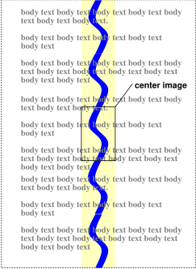

Contents
CSS properties allow authors to specify the foreground color and background of an element. Backgrounds may be colors or images. Background properties allow authors to position a background image, repeat it, and declare whether it should be fixed with respect to the viewport or scrolled along with the document.
See the section on color units for the syntax of valid color values.
This property describes the foreground color of an element's text content. There are different ways to specify red:
em { color: red } /* predefined color name */
em { color: rgb(255,0,0) } /* RGB range 0-255 */
Authors may specify the background of an element (i.e., its rendering surface) as either a color or an image. In terms of the box model, "background" refers to the background of the content, padding and border areas. Border colors and styles are set with the border properties. Margins are always transparent.
Background properties are not inherited, but the parent box's background will shine through by default because of the initial 'transparent' value on 'background-color'.
The background of the root element becomes the background of the canvas and covers the entire canvas, anchored at the same point as it would be if it was painted only for the root element itself. The root element does not paint this background again.
For HTML documents, however, we recommend that authors specify the background for the BODY element rather than the HTML element. User agents should observe the following precedence rules to fill in the background of the canvas of HTML documents: if the value of the 'background' property for the HTML element is different from 'transparent' then use it, else use the value of the 'background' property for the BODY element. If the resulting value is 'transparent', the rendering is undefined. This does not apply to XHTML documents.
According to these rules, the canvas underlying the following HTML document will have a "marble" background:
<!DOCTYPE HTML PUBLIC "-//W3C//DTD HTML 4.0//EN">
<TITLE>Setting the canvas background</TITLE>
<STYLE type="text/css">
BODY { background: url("http://example.com/marble.png") }
</STYLE>
<P>My background is marble.
Note that the rule for the BODY element will work even though the BODY tag has been omitted in the HTML source since the HTML parser will infer the missing tag.
Backgrounds of elements that form a stacking context (see the 'z-index' property) are painted at the bottom of the element's stacking context, below anything in that stacking context.
| Value: | <color> | transparent | inherit |
| Initial: | transparent |
| Applies to: | all elements |
| Inherited: | no |
| Percentages: | N/A |
| Media: | visual |
| Computed value: | as specified |
This property sets the background color of an element, either a <color> value or the keyword 'transparent', to make the underlying colors shine through.
h1 { background-color: #F00 }
| Value: | <uri> | none | inherit |
| Initial: | none |
| Applies to: | all elements |
| Inherited: | no |
| Percentages: | N/A |
| Media: | visual |
| Computed value: | absolute URI |
This property sets the background image of an element. When setting a background image, authors should also specify a background color that will be used when the image is unavailable. When the image is available, it is rendered on top of the background color. (Thus, the color is visible in the transparent parts of the image).
Values for this property are either <uri>, to specify the image, or 'none', when no image is used.
body { background-image: url("marble.png") }
p { background-image: none }
| Value: | repeat | repeat-x | repeat-y | no-repeat | inherit |
| Initial: | repeat |
| Applies to: | all elements |
| Inherited: | no |
| Percentages: | N/A |
| Media: | visual |
| Computed value: | as specified |
If a background image is specified, this property specifies whether the image is repeated (tiled), and how. All tiling covers the content, padding and border areas of a box.
The tiling and positioning of the background-image on inline elements is undefined in this specification. A future level of CSS may define the tiling and positioning of the background-image on inline elements.
Values have the following meanings:
body {
background: white url("pendant.png");
background-repeat: repeat-y;
background-position: center;
}
 [D]
One copy of the background image is centered, and other copies are put above and below it to make a vertical band behind the element.
| Value: | scroll | fixed | inherit |
| Initial: | scroll |
| Applies to: | all elements |
| Inherited: | no |
| Percentages: | N/A |
| Media: | visual |
| Computed value: | as specified |
If a background image is specified, this property specifies whether it is fixed with regard to the viewport ('fixed') or scrolls along with the containing block ('scroll').
Note that there is only one viewport per view. If an element has a scrolling mechanism (see 'overflow'), a 'fixed' background doesn't move with the element, and a 'scroll' background doesn't move with the scrolling mechanism.
Even if the image is fixed, it is still only visible when it is in the content, padding or border area of the element. Thus, unless the image is tiled ('background-repeat: repeat'), it may be invisible.
This example creates an infinite vertical band that remains "glued" to the viewport when the element is scrolled.
body {
background: red url("pendant.png");
background-repeat: repeat-y;
background-attachment: fixed;
}
User agents that do not support 'fixed' backgrounds (for example due to limitations of the hardware platform) should ignore declarations with the keyword 'fixed'. For example:
body {
background: white url(paper.png) scroll; /* for all UAs */
background: white url(ledger.png) fixed; /* for UAs that do fixed backgrounds */
}
See the section on conformance for details.
| Value: | [ [ <percentage> | <length> | left | center | right ] [ <percentage> | <length> | top | center | bottom ]? ] | [ [ left | center | right ] || [ top | center | bottom ] ] | inherit |
| Initial: | 0% 0% |
| Applies to: | all elements |
| Inherited: | no |
| Percentages: | refer to the size of the box itself |
| Media: | visual |
| Computed value: | for <length> the absolute value, otherwise a percentage |
If a background image has been specified, this property specifies its initial position. Values have the following meanings:
If only one percentage or length value is given, it sets the horizontal position only, and the vertical position will be 50%. If two values are given, the horizontal position comes first. Combinations of keyword, length and percentage values are allowed, (e.g., '50% 2cm' or 'center 2cm' or 'center 10%'). For combinations of keyword and non-keyword values, 'left' and 'right' may only be used as the first value, and 'top' and 'bottom' may only be used as the second value. Negative positions are allowed.
body { background: url("banner.jpeg") right top } /* 100% 0% */
body { background: url("banner.jpeg") top center } /* 50% 0% */
body { background: url("banner.jpeg") center } /* 50% 50% */
body { background: url("banner.jpeg") bottom } /* 50% 100% */
The tiling and positioning of the background-image on inline elements is undefined in this specification. A future level of CSS may define the tiling and positioning of the background-image on inline elements.
If the background image is fixed within the viewport (see the property), the image is placed relative to the viewport instead of the element's padding area. For example,
body {
background-image: url("logo.png");
background-attachment: fixed;
background-position: 100% 100%;
background-repeat: no-repeat;
}
In the example above, the (single) image is placed in the lower-right corner of the viewport.
| Value: | [<'background-color'> || <'background-image'> || <'background-repeat'> || || <'background-position'>] | inherit |
| Initial: | see individual properties |
| Applies to: | all elements |
| Inherited: | no |
| Percentages: | allowed on 'background-position' |
| Media: | visual |
| Computed value: | see individual properties |
The 'background' property is a shorthand property for setting the individual background properties (i.e., 'background-color', 'background-image', 'background-repeat', and 'background-position') at the same place in the style sheet.
Given a valid declaration, the 'background' property first sets all the individual background properties to their initial values, then assigns explicit values given in the declaration.
In the first rule of the following example, only a value for 'background-color' has been given and the other individual properties are set to their initial value. In the second rule, all individual properties have been specified.
BODY { background: red }
P { background: url("chess.png") gray 50% repeat fixed }
For information about gamma issues, please consult the Gamma Tutorial in the PNG specification ([PNG10]).
Note. In the computation of gamma correction, UAs displaying on a CRT may assume an ideal CRT and ignore any effects on apparent gamma caused by dithering. That means the minimal handling they need to do on current platforms is:
"Applying gamma" means that each of the three R, G and B must be converted to R'=Rgamma, G'=Ggamma, B'=Bgamma, before being handed to the OS.
This may be done rapidly by building a 256-element lookup table once per browser invocation thus:
for i := 0 to 255 do raw := i / 255.0; corr := pow (raw, gamma); table[i] := trunc (0.5 + corr * 255.0) end
which then avoids any need to do transcendental math per color attribute, far less per pixel.